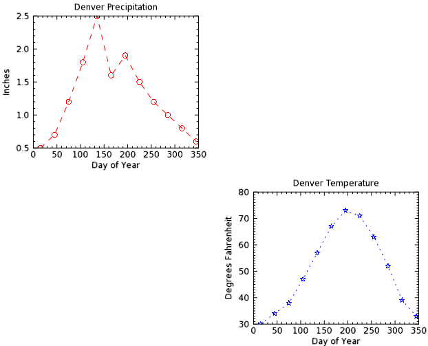
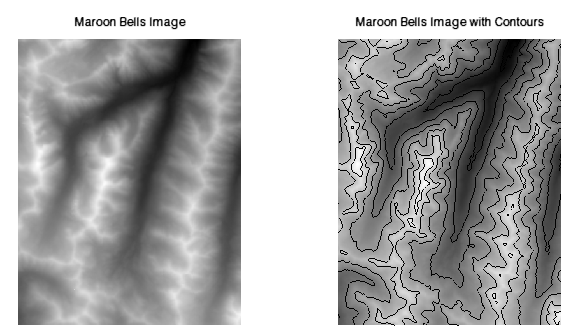
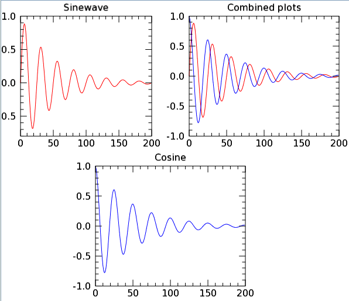
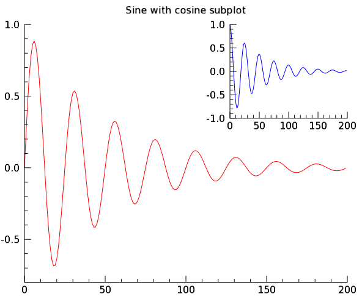
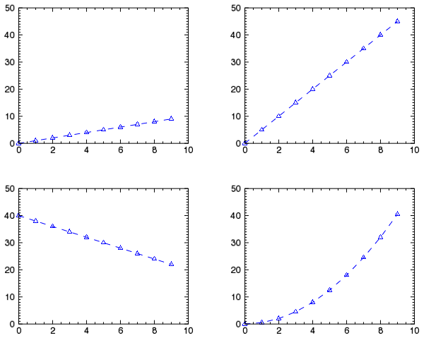

IDL provides several ways to display multiple graphics in one window. The following keywords are common to all the IDL graphics:
The LAYOUT property specifies a grid within a graphics window, and determines where the graphic should appear. The syntax of LAYOUT is three numbers: [
ncolumns
,
nrows
,
location
]. The grid is determined by the number of columns (ncolumns) by the number of rows (nrows). The location of the graphic is determined by the third number. The grid numbering starts in the upper left (1) and goes sequentially by column and then by row.
Note: For each graphic after the first one, you must use the CURRENT property to direct IDL to place the graphic in the same window.
The following example shows precipitation and temperature data for Denver, Colorado.

The code shown below creates the graphic shown above. You can copy the entire block and paste it into the IDL command line to run it.
PRECIP=[0.5,0.7,1.2,1.8,2.5,1.6,1.9,1.5,1.2,1.0,0.8,0.6]
TEMP=[30, 34, 38, 47, 57, 67, 73, 71, 63, 52, 39, 33]
DAY=FINDGEN(12) * 30 + 15
; Plot #1: In position #1 on the grid defined by LAYOUT
p=PLOT(DAY, PRECIP, 'ro--',$
TITLE = 'Denver Precipitation', $
YTITLE = 'Inches', XTITLE= 'Day of Year', $
LAYOUT=[2,2,1])
; Plot #2: In position #4 on the grid defined by LAYOUT
p = PLOT(DAY, TEMP, 'bS:', $
TITLE = 'Denver Temperature', $
XTITLE = 'Day of Year', $
YTITLE = 'Degrees Fahrenheit', /CURRENT, $
LAYOUT=[2,2,4])
Both plots appear in the same window, as defined by LAYOUT.
The following example shows how to use LAYOUT as a simple grid.

The code shown below creates the graphic shown above. You can copy the entire block and paste it into the IDL command line to run it.
; Open the Maroon Bells elevation data
RESTORE, FILEPATH('marbells.dat', SUBDIR=['examples','data'])
; Display the data as an image in the first cell
; and define the cell grid as two columns, one row.
im = IMAGE(elev, LAYOUT=[2,1,1],$
MARGIN=[0.05, 0.22, 0.05, 0.22], $
TITLE='Maroon Bells Image')
; Use CURRENT to display the visualization in
; the same window, in the next cell.
im = IMAGE(elev, /CURRENT, LAYOUT=[2,1,2],$
MARGIN=[0.05, 0.22, 0.05, 0.22], $
TITLE='Maroon Bells Image with Contours')
; Display the contour lines as an overplot in the same cell.
c = CONTOUR(elev, N_LEVELS=10, /OVERPLOT)
The POSITION property (common to all the graphics functions) allows you to position one or more graphics within one graphic window. Set this property to either a two-element or four-element vector. For two elements, the POSITION gives the location of the lower-left corner of the graphic, in normalized coordinates [x0, y0]. For four elements, the POSITION gives the lower left and upper right corners of the graphic, in the form [x0, y0, x1, y1].
Note: For each graphic after the first one, you must use the CURRENT property to tell IDL to place the graphic in the same window.
The following example displays how to use POSITION in a freeform layout.

The code shown below creates the graphic shown above. You can copy the entire block and paste it into the IDL command line to run it.
; Define the data.
sinewave = SIN(2.0*FINDGEN(200)*!PI/25.0)*EXP(-0.02*FINDGEN(200))
cosine = COS(2.0*FINDGEN(200)*!PI/25.0)*EXP(-0.02*FINDGEN(200))
; Use the PLOT function, defining the plot line
; as a red dash using '-r', and use
; POSITION to define three cells.
p = PLOT(sinewave, '-r',$
POSITION=[.05,.55,.40,.95], TITLE = 'Sinewave')
; Plot the cosine data, defining the plot symbol
; as a blue dash. Use CURRENT to draw in the same window.
p=PLOT(cosine, '-b',$
/CURRENT, POSITION=[.25,.05,.65,.45],$
TITLE = 'Cosine')
; Display the sine and cosine data combined.
p=PLOT(sinewave, '-r',$
/CURRENT, POSITION=[.50,.55,.90,.95])
; Draw the cosine plot. Use OVERPLOT to draw
; on top of the previous plot.
p=PLOT(cosine, '-b', /OVERPLOT, TITLE='Combined plots')

Using the same data as the example above, the following example shows how to position a large plot with a subplot:
; Define plot data
sinewave = SIN(2.0*FINDGEN(200)*!PI/25.0)*EXP(-0.02*FINDGEN(200))
cosine = COS(2.0*FINDGEN(200)*!PI/25.0)*EXP(-0.02*FINDGEN(200))
; Define the first visualization using the PLOT function.
; Display the sine data.
; Position the plot to cover most of the graphic window.
p=PLOT(sinewave, '-r', AXIS_STYLE=1, $
POSITION=[.075,.075,.90,.90], $
TITLE = 'Sine with cosine subplot')
; Define the second plot.
; Position the plot to display as a subplot in the same space.
p=PLOT(cosine, '-b', AXIS_STYLE=1, $
/CURRENT, POSITION=[.60,.60,.90,.90])
Use the _EXTRA keyword to inherit keywords from one plot command to store and set properties for other plots.

The following example shows how to define the properties for the first plot, then how to use the _EXTRA keyword to apply the same properties to the remaining plots. The example places all plots in the same graphics window.
y1 = FINDGEN(10)
y2 = y1*5
y3 = -2*y1 + 40
y4 = 0.5*y1^2
; Put four plots in the same window
; and use the same color, linestyle,
; symbol and yrange.
props = {current:1, color:'blue', $
linestyle:'dashed', symbol:'triangle', $
yrange:[0,50]}
w = WINDOW( $
WINDOW_TITLE = 'Four plots with common properties')
p1 = PLOT(y1, LAYOUT = [2,2,1], _EXTRA = props)
p2 = PLOT(y2, LAYOUT = [2,2,2], _EXTRA = props)
p3 = PLOT(y3, LAYOUT = [2,2,3], _EXTRA = props)
p4 = PLOT(y4, LAYOUT = [2,2,4], _EXTRA = props)